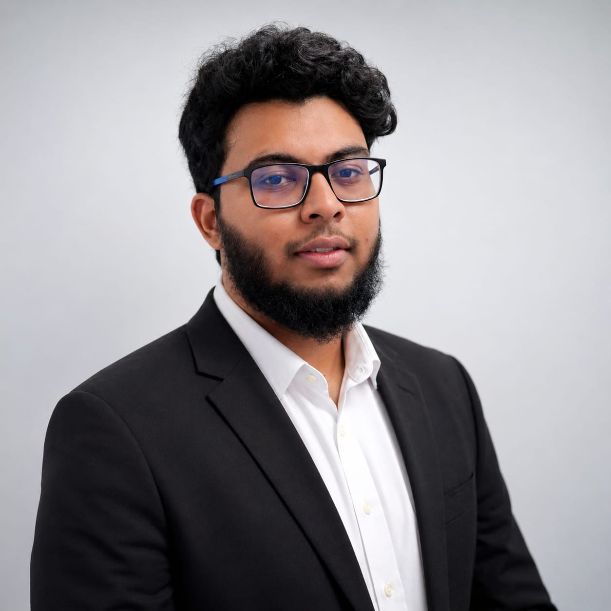

Mechanical Engineering (Honours) graduate from Curtin University (2026) with experience across experimental research, simulation, and sustainable design. 4 published research papers (Springer & IEEE), hands-on project delivery from concept through fabrication, and founding leadership of 8 engineering student chapters. ASME-certified with GCAA-approved aviation maintenance training. Based in Gauteng, South Africa — ECSA Candidate Engineer registration in progress.
BEng (Hons) Mechanical, Curtin University 2026 · MSc, University of Pretoria from 2027 · Gauteng, South Africa
My engineering work spans sustainability, simulation, aerospace, and robotics. I’ve built physical test rigs, designed gearboxes to industrial specs, proposed novel cooling systems, developed circular-economy products, designed a solar cooking backpack that reached the James Dyson Award national finals, and co-led AI-driven aviation decarbonization research. My Honours thesis characterised a natural oil sorbent by combining image analysis, CFD, and physical absorption testing. I hold ASME certifications, aviation maintenance training from a GCAA-approved academy, and founding leadership of 8 student chapters. I begin a thesis-based MSc at the University of Pretoria in 2027.
Four peer-reviewed conference papers across Springer Nature and IEEE.
Research, teaching, aviation, and conference management.
Founding leadership across 8 student organisations at Curtin University Dubai.
ASME courses, aviation training, mentorship, and workshops.
Technical, engineering, and leadership competencies.
Based in Gauteng, South Africa. Open to research collaborations, engineering roles, and graduate opportunities.